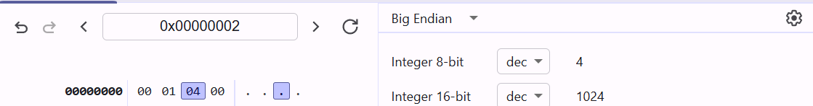
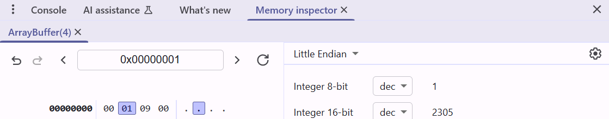

Context: Viewing a 4-byte ArrayBuffer in Chrome Memory Inspector.
ArrayBuffer in the Chrome Memory Inspector.
| Offset | Value |
|---|---|
| 0 | 0x00 |
| 1 | 0x01 |
| 2 | 0x04 |
| 3 | 0x00 |
You're in Big Endian mode.
📍 Current Selection: Byte 2 (value: 0x04)
Shows the value at byte offset 2 interpreted as a single 8-bit integer:
Byte 2 = 0x04 = 4 ✅
Shows the value starting at byte 2 and reading 2 bytes: byte 2 and byte 3.
0x040x00In Big Endian, this means:
✅ That’s why the inspector shows Integer 16-bit = 1024.
It’s just the raw 2-byte value starting from byte 2, interpreted as a 16-bit integer in Big Endian order.
In other words:
0x0400 (hex) = 1024 (decimal)This doesn't necessarily represent a variable or operation — it’s just what those 2 bytes represent numerically.
| Term | Meaning |
|---|---|
| Integer 8-bit | Byte 2 = 0x04 = 4 |
| Integer 16-bit | Bytes 2–3 = 0x04 0x00 → 0x0400 → 1024 in decimal |
| Big Endian | Most significant byte first → 0x04 is high byte, 0x00 is low byte |
We're interpreting 2 bytes (16 bits) as a single unsigned integer in Big Endian order:
0x04 (this is the most significant byte - MSB)0x00 (this is the least significant byte - LSB)In Big Endian, the formula to compute the 16-bit value is:
0x04 (MSB) goes to the high 8 bits:
→ 0x04 << 8 = 0x0400 = 10240x00 (LSB) stays in the low 8 bits.
| Byte | Hex | Decimal | Role |
|---|---|---|---|
| 2 | 0x04 | 4 | Most significant byte (× 256) |
| 3 | 0x00 | 0 | Least significant byte (+ 1×) |
This is how multi-byte values are built from individual bytes in memory.
A byte can represent values from 0 to 255:
When you combine 2 bytes into a 16-bit integer, you need to assign one byte to the high-order bits and the other to the low-order bits.
Let’s say you have two bytes:
| Byte | Value |
|---|---|
| Byte 0 | A (MSB) |
| Byte 1 | B (LSB) |
In Big Endian, you compute the value like this:
Why 28? Because you’re shifting A into the higher byte position of a 16-bit number.
Let’s say:
0x04 (MSB)0x00 (LSB)Then:
Binary:
0x04 = 00000100
0x00 = 00000000
Combined in 16 bits:
00000100 00000000 → This is 0x0400That’s 4 * 256 = 1024 in decimal.
So:
For n bytes, the value is:
For 2 bytes:
256 is used because the first byte (MSB) in Big Endian represents the higher-order bits — essentially multiplied by 28 = 256.
It’s how binary positional values work:
Let’s now break down why exactly we use 28 in computing with bytes and binary.
We use base 2 (binary) in computers because:
Examples:
2^0 = 1
2^1 = 2
2^2 = 4
...
2^7 = 128Because 1 byte = 8 bits.
So a byte can represent any number from:
That’s 256 possible values:
Let’s say you store a 16-bit number using two 8-bit bytes:
Byte1 (MSB) | Byte2 (LSB)If:
0x040x00You want to reconstruct the 16-bit value:
So:
Because you're "shifting" Byte1 8 bits to the left → this is how binary place value works.
It’s like how in decimal:
53 = 5×10^1 + 3×10^0In binary:
0x0400 = 0x04 × 2^8 + 0x00So 28 is the weight of a full byte (shifted up one byte).
| Symbol | Meaning |
|---|---|
| 2 | Base of binary (0s and 1s) |
| 8 | Number of bits in a byte |
| 28 | 256 → The number of values one byte can represent, or its positional weight |
So: We use 28 because we are moving one byte (8 bits) to the left — same as multiplying by 256.
Let’s write both formulas clearly and explain them side-by-side.
In Big Endian, the most significant byte (MSB) comes first (at the lower memory address).
Formula:
Example:
If memory has:
| Offset | Value |
|---|---|
| 0 | 0x04 |
| 1 | 0x01 |
Then:
In Little Endian, the least significant byte (LSB) comes first (at the lower memory address).
Formula:
Example:
Same bytes, but stored in reverse:
| Offset | Value |
|---|---|
| 0 | 0x01 |
| 1 | 0x04 |
Then:
| Endian | Memory Order (Byte0, Byte1) | Formula |
|---|---|---|
| Big Endian | MSB, LSB | Byte0 × 256 + Byte1 |
| Little Endian | LSB, MSB | Byte0 + Byte1 × 256 |
Because in Little Endian, the low byte is stored at the lowest address — it's a CPU-level design choice. Intel CPUs use Little Endian; some network protocols use Big Endian.
You're using Chrome DevTools' Memory Inspector to view an ArrayBuffer(4) in Little Endian mode.

| Offset | Value (hex) |
|---|---|
| 0 | 0x00 |
| 1 | 0x01 |
| 2 | 0x09 |
| 3 | 0x00 |
You have byte 1 (0x01) selected.
You're selecting byte 1, which contains 0x01.
8-bit integer = 0x01 = 1 ✅
Since you're in Little Endian, the Memory Inspector takes:
0x01 (LSB — least significant byte)0x09 (MSB — most significant byte)And uses this formula:
Substitute the values:
✅ That's why it shows 2305 as the Integer 16-bit value.
| Field | Explanation |
|---|---|
| Endian | Little Endian → LSB first, MSB second |
| Selected Byte | Byte 1 = 0x01 (shows as 8-bit integer: 1) |
| Next Byte | Byte 2 = 0x09 |
| 16-bit value | 0x0901 in memory → interpreted as 2305 decimal |
| Formula Used | 1 + 9 × 256 = 2305 |